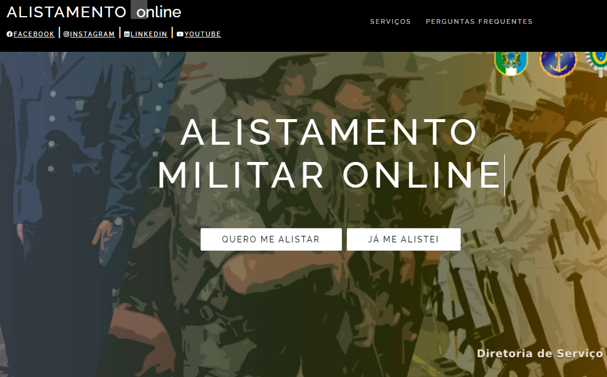
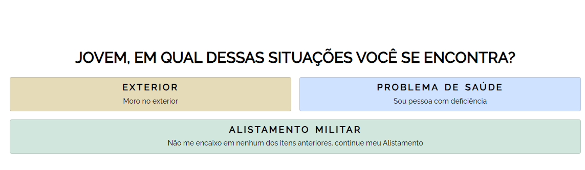

O serviço militar é o serviço prestado por um indivíduo em uma das Forças Armadas (Exército, Marinha ou Aeronáutica ou outra força militar), seja como um trabalho escolhido (voluntário) ou como resultado de um alistamento involuntário (recrutamento). O alistamento militar é obrigatório para jovens de 18 anos e realizado nas Juntas de Serviço Militar distribuídas pelo país. Anualmente, o processo de alistamento é aberto no primeiro dia do ano e se estende até 30 de junho. Serviço militar é a formação e treinamento militar obrigatórios de cidadãos designados pelo Estado, ou os alistados voluntariamente.
Sim, Se você é brasileiro nato, deve alistar-se até o dia 30 de junho do ano em que completa 18. Entretanto, em tempo de paz, os eclesiásticos e as mulheres estão dispensados. Os deficientes físicos têm direito assegurado ao certificado de isenção (CI), que deve ser requerido, no Brasil, à Junta de Serviço Militar mais próxima a sua residência.
Você ficará em débito com o serviço militar, o que o impedirá de, no futuro, prestar concurso público, tirar passaporte, ingressar em universidade, entre outras penalidades.
Passo 1 de 3
1. Acessar o site do Alistamento Militar e ir em "Quero me alistar".
Passo 2 de 3
2. Clique em qual situação se encontra.
Passo 3 de 3
3. Selecionando "Alistamento Militar", você sera redirecionado para o site do gov.br para realizar o login ou cadastrar-se.
Obs: para acompanhar o processo basta voltar na pagina inicial e ir em "Já me alistei" e depois "Acompanhar alistamento".
© 2023 Igor Gabriel. Todos os direitos reservados.